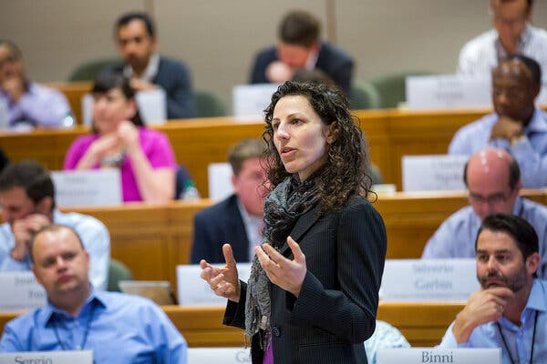
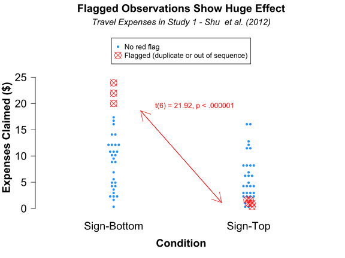
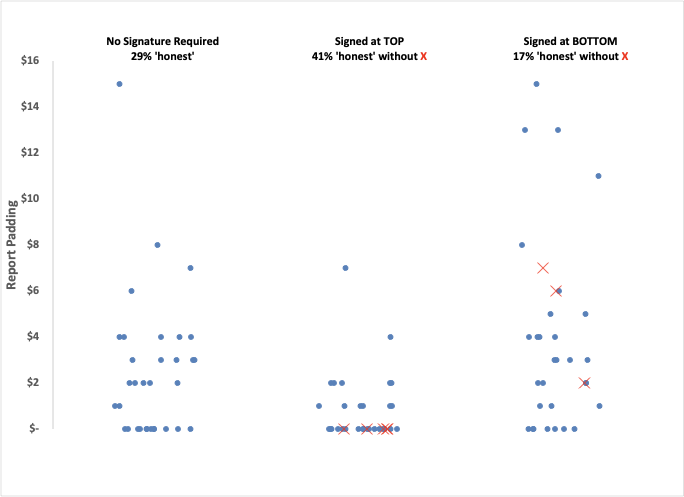

Academic science is in crisis. I mean that in the medical sense, “the turning point of a disease when an important change takes place, indicating either recovery or death.” The mechanisms by which research is funded and certain professors are promoted are rapidly breaking down. The system has been established to be rigged by intelligent people who should know better. What started as a good idea, “peer review,” has become a nasty echo chamber within our institutions intended to preserve the funding structure of the Government-Academic complex
1
.
I can speak the truth here because I owe no debt.
This week’s installment concerns accusations of academic fraud, specifically fabrication and manipulation of primary data, aimed at Dr. Francesca Gino, a Professor at Harvard Business School, and an article entitled “
The Harvard Professor and the Bloggers
” from (naturally) the New York Times.
2
The case outline is as follows:
Prof. Gino was accused of fraud related to four papers after behavioral science bloggers from
Data Colada
raised concerns about potential data manipulation in her research.
Consequently, Harvard placed her on unpaid leave and seeks to revoke her tenure.
In response, Prof. Gino filed a defamation lawsuit against Harvard and the bloggers, seeking significant monetary damages.
Ironically, perhaps, the area of Prof. Gino’s more recent research is the behavioral economics of dishonesty, specifically studying people who lie to get ahead. To put the case into perspective, she has published over 400 articles since beginning her academic career, so the accusations come from around 1% of her anthology.
Instead of dragging my readers into the specific details of a legal case,
a la
Serial
, let’s examine the academic process of scientific inquiry.

Prof. Francesca Gino speaking at an executive education event at Harvard Business School. Credit Brooks Kraft/Harvard University
There’s certainly been no “due process” in her case—rather than risk its reputation based on an accusation (not by a District Attorney bound by ethics, but by Prof. Gino’s academic rivals), Harvard chose to fire a tenured professor with an impressive intellectual output. They did so neither adhering to the legal standards of “innocent until proven guilty” nor “beyond the shadow of a doubt.” That’s pretty authoritarian if you ask me.
But, for the sake of argument, let’s assume that Prof. Gino’s rivals are correct in their assertion that the published data was, indeed, fabricated to support predetermined ‘interesting’ conclusions, specifically:
People are more honest when asked to sign a tax form at the top rather than the bottom.
Students are more likely to want cleaning products when asked to write an essay that conflicts with their beliefs.
People who cheat tend to be more creative than those who don’t.
People feel worse about networking after contemplating their obligations than their aspirations.
The four papers share a theme: They are generally consistent with previous reports in behavioral economics (see
Freakonomics
), so while the study designs were inventive, the outcomes, although clever, were consistent with prevailing opinions. [For what it’s worth, all of these papers have been retracted.]
From my perspective as a physical scientist, the data sets relied upon by psychological researchers (particularly those involved in economics) are dismal. Consider the analysis of the
first paper’s
data
3
by
the bloggers
:

caption...
The difference between a statistically significant and insignificant outcome is data from eight (out of 101) participants. Inconveniently, these eight data points also make the difference between a publishable and an unpublishable study. Because “publish or perish” continues to rule the academic ethos as one of the few quantitative metrics available, the incentive is significant—a publication is of tangible (if imprecise) economic value.
RABBIT HOLE: Skip unless you are a data nerd.
Despite my intentions, I couldn’t resist revisiting the primary data to see whose conclusions I believed. Given the competitive nature of academic scientists, I felt I had to question the bloggers’ conclusions to see if
they
were also shading their conclusions for effect. Conveniently and transparently, they pointed me to the original data and flagged the specific data points they thought were erroneous, and potentially fradulent. I went down this particular rabbit hole after I wanted to caption their chart and noticed that the vertical axis measures “expenses claimed” rather than what I considered more relevant to participant dishonesty, “report padding”. In other words, “How much (if at all) did the respondent overstate their results for a small sum of money?” I also noticed that, visually at least, there didn’t seem to be 101 points, so I wanted to know if they were giving us the whole story.
As it turns out, there’s a whole set of data missing. The study also had a control set of respondents who were not asked to sign anything, and our bloggers omitted it. So, for my personal interest I looked at how much the report was padded across all 101 participants, and here’s what I see:

Primary data from the repository. All the points along the baseline are from “honest” participants who told the truth, and the percentage of these participants in each bin are included along the top. Because eight points of the 100 were called into question, I excluded them from this simple analysis.
A statistical analysis is certainly warranted given the spread of the data, but it certainly
looks
as if signing the form at the top promotes honesty and reduces exaggeration, meaning that the headline conclusion was not entirely ficitious, if the other data points are real.
Ask yourself, is this evidence of fraud compelling enough to fire a tenured professor? If there were evidence that the study was fully fabricated, that’d be one thing. But in a field where statistical analysis is often the only way to determine a meaningful effect, it’s like arguing who is the better hitter, Joe Dimaggio or Babe Ruth.
I’m reminded of the Twain misattribution I covered a long time ago
4
, “Lies, damned lies, and statistics.”
While the hook is that the researchers accused of manipulation study dishonesty, the underlying story is worth considering. The bloggers could assert fabrication
because they had electronic access to the original data
! While that’s slowly becoming the rule rather than the exception, checking other people’s published work is thankless and financially unrewarding. As a rule, the peer reviewers of academic publications provide their time
pro bono
and, even if so inclined, cannot access or analyze the original data before publication. Consequently, reviewers perform what amounts to a fashion review—if the journal supports an existing thought trend by a famous scientist, it’s more likely to get positive marks.
As the documented manuscript editor, Nobel Laureate Daniel Kahnemann, put it, “When I see a surprising finding [today], my default is not to believe it. Twelve years ago [when the paper was first submitted], my default was to believe anything that was surprising.”
The bottom line:
Science has a severe quality control problem.
The academic ecosystem encourages fraud and its counterpart, hyperbole, by continuing to overvalue “breakthroughs,” even if entirely speculative, and then failing to reward academics for work that confirms (or refutes) such publications. Scientists are human and are at least as susceptible as the average to self-deception (I’d argue, more susceptible
5
!). The intrinsically unrewarding peer review process is weakened by a social hierarchy that overvalues work from “top universities.”
You might be saying, “OK. Fine. That’s psychology, not as exacting or well-funded a science as, say, cancer research. You get what you pay for, after all.” It turns out that, more than a decade ago, after attempting to reproduce results from 53 “breakthroughs” supported primarily by public research funding, researchers from Amgen reported success in only six (yes, 6!) of them.
In response to this “discovery”, published in
Nature
, the Center for Open Science started an effort called
Reproducibility Group: Cancer Biology
. In 2021, this group reported its findings. Of the 53 papers they checked, only 2% (i.e., 1) had open data, and a third of the authors (17) were entirely unhelpful. None of the papers contained all the information necessary to reproduce the experiment. Their results were slightly more promising than the Amgen report, but fewer than half of the effects were replicable.
For the three years covered by the Reproducibility Group, funding by the National Cancer Institute alone amounted to around $15 billion or $5 billion annually. The fact-checking group spent about $40 million over eight years ($5 million annually) on
all
its projects.
Are we getting scientific value for our research dollars? The obvious answer is “NO!”
Some promising developments include forming and funding
Focused Research Organizations
and proliferating technologist-led translational funding by various flavors of Advanced Research Projects Agencies
6
. But the fundamental truth is modern universities
require
the overhead provided by grants and
desire
the prestige that thought leaders bring. Unless the Government-Academic complex is dissolved, the scientific enterprise itself is in grave danger. Scientists should lead the way—there’s a better way to help the world progress, and if we as a group (particularly those who benefit the most from the status quo) don’t step up, environmental sustainability will be the least of our worries.
Returning to Prof. Gino, she was doing what researchers do—making measurements and publishing interpretations. Whether or not she published factually incorrect data is beside the point. What matters is the systemic response. Even the Grand Old Institution, my alma mater, Harvard, with its motto “Veritas” (Latin for truth), appears so concerned with appearances that it is willing to remove the time-honored protections of tenure from a faculty member rather than face up to the fact that much of the research conducted inside the ivy-covered walls is bullshit—not necessarily outright fabrication, but at the very least failing to contribute to an increase in human knowledge.
Note: Had the data been kept private, Prof. Gino would still have her job, and had more effort been exerted before publication to audit the results, the work would have been refined more and perhaps not published at all. And yet, we wonder why researchers don’t embrace transparency! If academic trolls can cause you to lose a lifetime appointment, what’s the benefit?
I’ll end with a radical suggestion:
Fund data collection separately from data interpretation.
This will break the connection between doing the lab work and explaining what it means. And insist that those who publish data interpretation do so fully transparently. When I was in Algebra II, I had to show my work or get only partial credit for the answer! We should hold academics to the same standards they hold their students to! Peer review could then determine which data sets to collect and by whom rather than selecting nebulous proposals that address the manufactured objectives of grant solicitations.